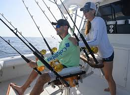
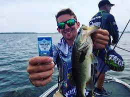
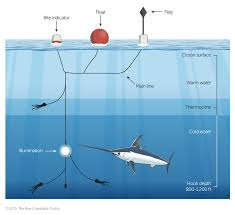
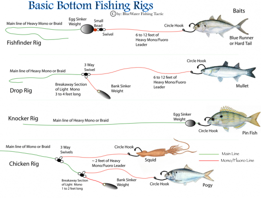

Bring your Friends, Family, Uncles, Cousins, Coworkers, Church Groups ... BRING EVERYONE TO JOIN IN ON THE FUN!
A Fisherman's Life! Once you have booked a charter or boat rental with our team - you might be asking yourself "What should I bring?". We will discuss all things necessary and unnecessary for you to prepare to bring on your booked fishing event. Some of the topics we will discuss will be: fishing gear to buy or rent, protective, breathable clothing, sunscreen, boat safety information, etc.
 
"What Should I Bring For Deep Sea Fishing?"
This section will further discuss deep sea and off-shore fishing tips and methods so that you're guarenteed to have a big catch! Please familiarize yourself with the necessesities of fishing that our Captains and Crew Members have put together for you in the list below:
- Breathable/loose clothing that covers neck, arms, & legs preferred
- Hats that protect from the sun's harmful rays
- Sunscreen - recommended use of sunscreen with minimum SPF 90
- Eye protection; Sunglasses (optional but recommended)
- flip-flops, slides, sandals, crocs, sneakers; some form of foot protection
If you have anything that you absolutely cannont live without - DO NOT BRING IT! People tend to lose loose items such as mobile phones, wallets, earings, rings, sunglasses, hats, etc. Below is a list of gear we offer for rent or purchase. Please verify your Event Booking Details, because under certain charter/rental packages gear may be included. Below is a short list of some of our gear rental/purchase options:
- Fishing Rod (1 rod rent = $9.50 per day or purchase price is $175.00)
- Live bait (1 bait fish = $0.30)
- Variety of tested fishing line (for every +10 lbs of tested line, price + $5.70)
- All Life Jackets are FREE and sized before launching from Marina!
- Storage Fee for fish caught, which also includes ice ($50.00 per day)
- How to track schools of fish using the onboard equipment available
- Learning to Cast Off for all ages
- The Art of Patience
- Boat Safety with our Captains and Crew
 
Please check out this tutorial video from some of our fishing affiliates covering some of the basic steps in learning to deep sea fish. Enjoy!